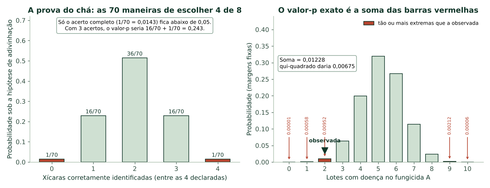
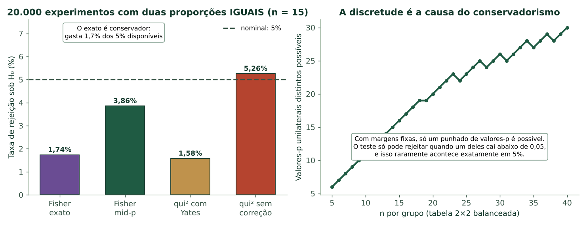

Teste exato de Fisher
Calcula o valor-p por enumeração de todas as tabelas com as mesmas margens, dispensando a aproximação qui-quadrado.
Comece por aqui
O qui-quadrado de independência depende de uma aproximação que exige frequências esperadas razoavelmente grandes. Quando a tabela tem poucas observações, essa aproximação deixa de valer — e o teste exato de Fisher a dispensa: ele calcula a probabilidade de cada tabela possível e soma as que são tão ou mais extremas que a observada.
Fisher conta, em The Design of Experiments (1935), o caso de uma senhora que afirmava distinguir, pelo sabor, se o leite fora posto antes ou depois do chá. Ele descreve o experimento que resolveria a questão — oito xícaras, quatro de cada tipo, com a senhora sabendo que são quatro de cada — e, ao analisá-lo, inventa o teste. O delineamento foi escolhido de modo que só o acerto completo fosse significativo: 1/70 = 0,0143.
O que é o teste
Mantidas fixas as margens da tabela — os totais de linha e de coluna —, uma tabela \(2\times2\) fica completamente determinada por uma única célula. Sob a hipótese de independência, o valor dessa célula segue uma distribuição hipergeométrica, exatamente como o número de bolas de uma cor numa amostra sem reposição. O valor-p é a soma das probabilidades de todas as tabelas tão ou menos prováveis que a observada.

Significa que o valor-p é calculado sem aproximação assintótica: a distribuição de referência é a verdadeira, não uma qui-quadrado que dela se aproxima. Não significa que o teste seja mais preciso em todos os sentidos — como se verá, ele é conservador, e essa é uma consequência direta de ser exato num espaço discreto.
Pressupostos e como verificá-los
| Pressuposto | Por que importa | Como verificar |
|---|---|---|
| Observações independentes | Cada unidade contribui para uma única célula. | Delineamento; para dados pareados, McNemar. |
| Categorias exclusivas e exaustivas | A tabela tem de ser uma partição. | Definição das categorias. |
| Frequências esperadas pequenas | Não é um problema: é justamente o caso de uso. | — |
| Margens fixas (condicionamento) | É o que torna a distribuição hipergeométrica exata. | Ver o quadro abaixo. |
| Contagens, não proporções | A enumeração precisa dos valores absolutos. | Use as frequências brutas. |
A crítica mais antiga ao teste é esta: na maioria dos estudos as margens não são fixas por delineamento. No exemplo do chá elas são — a senhora sabia que havia quatro de cada. Num ensaio clínico, o número de curados não é fixado de antemão. Condicionar nelas mesmo assim é o que garante a exatidão, ao preço do conservadorismo. Barnard propôs em 1945 um teste incondicional, mais poderoso, mas computacionalmente pesado e pouco usado. O debate entre Fisher e Barnard atravessou décadas e nunca foi encerrado.
Hipóteses e estatística de teste
Em que:
- \(a\)
- contagem da célula (1,1), a única livre quando as margens estão fixas
- \(n_{1\cdot},\ n_{2\cdot}\)
- totais das linhas
- \(m_1\)
- total da primeira coluna
- \(N\)
- total geral
- \(\theta\)
- razão de chances populacional
- \(a_{\text{obs}}\)
- valor observado da célula (1,1)
Exemplo numérico, passo a passo
| Com doença | Sem doença | Total | Taxa | |
|---|---|---|---|---|
| Fungicida A | 2 | 10 | 12 | 16,7% |
| Fungicida B | 8 | 3 | 11 | 72,7% |
| Total | 10 | 13 | 23 | 43,5% |
Com margens 12 e 11 nas linhas e 10 e 13 nas colunas, a célula (1,1) pode valer de 0 a 10. Cada valor determina a tabela inteira:
| a | 0 | 1 | 2 | 3 | 4 | 5 | 6 | 7 | 8 | 9 | 10 |
|---|---|---|---|---|---|---|---|---|---|---|---|
| P(X = a) | 0,0000096 | 0,0005769 | 0,0095187 | 0,0634579 | 0,1998923 | 0,3198277 | 0,2665231 | 0,1142242 | 0,0237967 | 0,0021153 | 0,0000577 |
A observada é \(a=2\), com probabilidade 0,0095187. As tabelas com probabilidade menor ou igual a essa são \(a\in\{0,1,2,9,10\}\), e a soma das suas probabilidades é
O qui-quadrado sem correção daria 0,00675 e com a correção de Yates, 0,02213. A menor frequência esperada é 4,78, abaixo do limite habitual — é exatamente a situação em que o exato é preferível.
Duas razões de chances
O produto cruzado \((2\times3)/(10\times8)=0{,}075\) é a razão de chances amostral. O R, em fisher.test(), devolve outra coisa: a estimativa condicional de máxima verossimilhança, que maximiza a verossimilhança da hipergeométrica não central e vale 0,0868 neste exemplo. Ela é a estimativa coerente com o teste; o intervalo de confiança, [0,0058; 0,7444], vem da mesma construção.
Propriedades
- O valor-p é exato no sentido de não depender de aproximação assintótica.
- É conservador: a taxa de erro real fica abaixo de \(\alpha\), por causa da discretude.
- A versão unilateral tem interpretação direta; a bilateral definida por "probabilidade menor ou igual" é a convenção do R e do scipy, mas há outras.
- Estende-se a tabelas \(r\times c\) por enumeração, com custo computacional crescente.
- A correção mid-p conta metade da probabilidade da tabela observada e recupera boa parte do poder perdido.
- Com amostras grandes, converge para o qui-quadrado.
Como interpretar os resultados
| Elemento | O que informa | Cuidado |
|---|---|---|
| p-value | Probabilidade exata, sob margens fixas. | Conservador: o nível real é menor que o nominal. |
| odds ratio | Estimativa condicional de máxima verossimilhança. | Não é o produto cruzado. |
| conf.int | Intervalo condicional. | Pode ser muito largo com contagens pequenas. |
| alternative | Unilateral ou bilateral. | Decida antes de ver os dados. |
| mid-p | Versão menos conservadora. | Não é um valor-p exato no sentido estrito. |
Reporte: a tabela completa com as contagens, o valor-p, a razão de chances com intervalo, e o fato de o teste ser exato. Se a amostra for pequena, informe também que o teste é conservador.
Como executar no R e em Python
Onde executar o código em Python
Não é preciso instalar nada: o Google Colab é um computador na nuvem, gratuito, que executa Python pelo navegador e já traz as bibliotecas usadas aqui (numpy, scipy e matplotlib).
fisher.test() está no pacote stats, já instalado com o R, e aceita tabelas \(2\times2\) e maiores. O argumento alternative permite a versão unilateral; workspace aumenta a memória para tabelas grandes, e simulate.p.value = TRUE é a alternativa quando a enumeração fica pesada. O pacote exact2x2 traz a correção mid-p e variantes do teste bilateral. dhyper(), também do stats, permite reproduzir a enumeração à mão.
fisher.test(tab) # bilateral
fisher.test(tab, alternative = "less")
exact2x2::fisher.exact(tab, midp = TRUE)
Exemplo de aplicação
Contexto dos dados
A ficha percorre quatro situações. A primeira é a prova do chá de Fisher, o experimento que deu origem ao teste. A segunda é um exemplo fictício de 23 lotes de sementes tratados com dois fungicidas, em que a menor frequência esperada fica abaixo de 5. A terceira é uma simulação que mede o conservadorismo. A quarta estende o teste a uma tabela 3 × 3.
Código em R
# Teste exato de Fisher: exemplo completo ----
# Pacotes: stats (base). Opcionais: exact2x2 (mid-p e variantes), DescTools
# install.packages(c("exact2x2", "DescTools"))
# PARTE 1 - a prova do chá (Fisher, 1935)
cha <- matrix(c(4, 0, 0, 4), nrow = 2,
dimnames = list("verdade" = c("leite 1º", "chá 1º"),
"declarou" = c("leite 1º", "chá 1º")))
cha
fisher.test(cha, alternative = "greater") # unilateral: p = 1/70 = 0,0143
fisher.test(cha) # bilateral
choose(4, 4) * choose(4, 0) / choose(8, 4) # a conta, à mão
# a distribuição completa do número de acertos
data.frame(acertos = 0:4,
combinacoes = choose(4, 0:4) * choose(4, 4:0),
prob = dhyper(0:4, 4, 4, 4))
fisher.test(matrix(c(3, 1, 1, 3), 2), alternative = "greater")$p.value # 3 acertos: 0,243
# PARTE 2 - contagens pequenas: 23 lotes de sementes, dois fungicidas (dados fictícios)
tab <- matrix(c(2, 8, 10, 3), nrow = 2,
dimnames = list(fungicida = c("A", "B"),
doenca = c("com", "sem")))
tab
prop.table(tab, 1)
chisq.test(tab) # o R avisa: aproximação pode ser incorreta
chisq.test(tab)$expected # a menor esperada é 4,78
chisq.test(tab, correct = FALSE)
fisher.test(tab) # o teste exato
# De onde vem o valor-p: as margens são FIXAS e só há 11 tabelas possíveis
n1 <- sum(tab[1, ]); n2 <- sum(tab[2, ]); m1 <- sum(tab[, 1]); N <- sum(tab)
a <- max(0, m1 - n2):min(n1, m1)
prob <- dhyper(a, n1, n2, m1)
obs <- dhyper(tab[1, 1], n1, n2, m1)
data.frame(a, prob, inclui = prob <= obs * (1 + 1e-7))
sum(prob[prob <= obs * (1 + 1e-7)]) # = o valor-p bilateral
# Razão de chances: a condicional (que o R devolve) e a amostral
fisher.test(tab)$estimate # condicional, por máxima verossimilhança
tab[1,1]*tab[2,2] / (tab[1,2]*tab[2,1]) # amostral
fisher.test(tab)$conf.int
# PARTE 3 - mid-p, menos conservador
library(exact2x2)
fisher.exact(tab, midp = TRUE)
# ou, à mão: p_exato - 0,5 * P(tabela observada)
# PARTE 4 - tabelas maiores que 2x2
tab3 <- matrix(c(8, 4, 1, 3, 6, 4, 1, 2, 7), nrow = 3, byrow = TRUE,
dimnames = list(cultivar = c("A", "B", "C"),
nota = c("baixa", "média", "alta")))
tab3
fisher.test(tab3) # enumeração exata
chisq.test(tab3) # aproximação, com aviso
chisq.test(tab3, simulate.p.value = TRUE, B = 200000)
# para tabelas grandes, fisher.test pode exigir mais memória:
# fisher.test(tab3, workspace = 2e8) ou fisher.test(tab3, simulate.p.value = TRUE)
# Gráfico
par(mfrow = c(1, 2))
barplot(dhyper(0:4, 4, 4, 4), names.arg = 0:4, col = c("firebrick", rep("gray85", 3), "firebrick"),
xlab = "Acertos", ylab = "Probabilidade", main = "Prova do chá")
barplot(prob, names.arg = a, col = ifelse(prob <= obs*(1+1e-7), "firebrick", "gray85"),
xlab = "Lotes com doença no fungicida A", ylab = "Probabilidade", main = "Fungicidas")
par(mfrow = c(1, 1))
A mesma análise em Python, com os resultados
Cole o código em um notebook do Google Colab ↗ e execute com Shift+Enter. Os valores abaixo são a saída desse código.
# Bibliotecas: numpy, scipy e matplotlib (já instaladas no Google Colab)
import numpy as np
from scipy import stats
from math import comb
import itertools
# ===================================================================
# PARTE 1 - o experimento que deu origem ao teste: a prova do chá
# Fisher (1935) descreve uma senhora que afirmava distinguir, pelo sabor,
# se o leite fora posto antes ou depois do chá. Oito xícaras, quatro de
# cada tipo, e ela sabia que eram quatro de cada.
print("A prova do chá (Fisher, 1935): 8 xícaras, 4 com leite primeiro")
print("A senhora acertou as 4. Qual a chance disso, se ela estivesse adivinhando?")
print(f" C(4,4) x C(4,0) / C(8,4) = {comb(4,4)*comb(4,0)}/{comb(8,4)} = {1/comb(8,4):.6f}")
print("\nDistribuição completa do número de acertos entre as 4 declaradas:")
print(" acertos combinações probabilidade")
for a in range(5):
print(f" {a} {comb(4,a)*comb(4,4-a):4d} {stats.hypergeom.pmf(a,8,4,4):.6f}")
print(f" soma = {sum(stats.hypergeom.pmf(a,8,4,4) for a in range(5)):.6f}")
cha = np.array([[4, 0], [0, 4]])
print(f"\nscipy, unilateral: {stats.fisher_exact(cha, alternative='greater')[1]:.6f}")
print(f"scipy, bilateral: {stats.fisher_exact(cha)[1]:.6f}")
print("Com 3 acertos o valor-p unilateral seria "
f"{stats.fisher_exact(np.array([[3,1],[1,3]]), alternative='greater')[1]:.6f}: não bastaria.")
print("O delineamento foi desenhado para que SÓ o acerto completo fosse significativo.")
# ===================================================================
# PARTE 2 - onde o teste é necessário: contagens pequenas
# Dados fictícios: 23 lotes de sementes tratadas com dois fungicidas,
# registrando se houve ou não emergência de plântulas doentes.
tab = np.array([[2, 10], [8, 3]]) # linhas: fungicida A, B; colunas: com, sem
print("\n" + "=" * 70)
print("Dados fictícios: 23 lotes de sementes, dois fungicidas")
print(f"{'':<14}{'com doença':>12}{'sem doença':>12}{'total':>8}{'taxa':>9}")
rot = ["fungicida A", "fungicida B"]
for i in range(2):
print(f"{rot[i]:<14}{tab[i,0]:12d}{tab[i,1]:12d}{tab[i].sum():8d}{100*tab[i,0]/tab[i].sum():8.1f}%")
print(f"{'total':<14}{tab[:,0].sum():12d}{tab[:,1].sum():12d}{tab.sum():8d}")
qui, p_qui, gl, esp = stats.chi2_contingency(tab, correction=False)
quiy, p_quiy, _, _ = stats.chi2_contingency(tab, correction=True)
print(f"\nFrequências esperadas:\n{np.round(esp,3)}")
print(f"Menor esperada = {esp.min():.3f} (abaixo de 5: a aproximação fica duvidosa)")
print(f"qui-quadrado sem correção = {qui:.4f}, p = {p_qui:.5f}")
print(f"qui-quadrado com Yates = {quiy:.4f}, p = {p_quiy:.5f}")
od, pf = stats.fisher_exact(tab)
print(f"Fisher exato, bilateral: razão de chances condicional = {od:.4f}, p = {pf:.5f}")
print(f"Fisher exato, unilateral (menos doença com A): p = "
f"{stats.fisher_exact(tab, alternative='less')[1]:.5f}")
# 2b. De onde vem o valor-p exato: enumerar as tabelas com as MESMAS margens
print("\nAs margens são fixas: linhas 12 e 11, colunas 10 e 13.")
print("Só há 11 tabelas possíveis, indexadas pela célula (1,1):")
n1, n2 = tab[0].sum(), tab[1].sum(); m1 = tab[:, 0].sum(); N = tab.sum()
obs_p = stats.hypergeom.pmf(tab[0,0], N, n1, m1)
print(f"{'a':>3}{'tabela':>22}{'probabilidade':>15}{'<= observada?':>15}")
soma = 0.0
for a in range(max(0, m1-n2), min(n1, m1)+1):
pr = stats.hypergeom.pmf(a, N, n1, m1)
inc = pr <= obs_p * (1 + 1e-7)
if inc: soma += pr
print(f"{a:3d} [{a:2d} {n1-a:2d} | {m1-a:2d} {N-n1-m1+a:2d}] {pr:13.8f} {'sim' if inc else 'não':>10}")
print(f"Soma das probabilidades <= a observada ({obs_p:.8f}) = {soma:.6f} = valor-p bilateral")
# 2c. Razão de chances: a amostral e a condicional de máxima verossimilhança
or_amostral = tab[0,0]*tab[1,1]/(tab[0,1]*tab[1,0])
res = stats.contingency.odds_ratio(tab) # condicional, por máxima verossimilhança
ic = res.confidence_interval(0.95)
print(f"\nRazão de chances amostral = {or_amostral:.6f} (a que fisher_exact devolve)")
print(f"Razão de chances condicional = {res.statistic:.6f} (a que fisher.test do R devolve)")
print(f"IC 95% condicional = [{ic.low:.4f}; {ic.high:.4f}]")
print("As duas NÃO são a mesma coisa. A condicional maximiza a verossimilhança da")
print("hipergeométrica não central, que é a distribuição sobre a qual o teste é")
print("construído; a amostral é o produto cruzado simples. Com contagens pequenas")
print("a diferença é visível, e o R reporta a condicional.")
se = np.sqrt(sum(1/tab[i,j] for i in range(2) for j in range(2)))
print(f"IC 95% de Wald sobre a amostral, para comparação = "
f"[{np.exp(np.log(or_amostral)-1.96*se):.4f}; {np.exp(np.log(or_amostral)+1.96*se):.4f}]")
# ===================================================================
# PARTE 3 - o preço do exato: conservadorismo
print("\n" + "=" * 70)
print("O teste exato é CONSERVADOR: a taxa de erro real fica abaixo do nominal.")
print("Simulação: duas proporções iguais a 0,3, com n = 15 por grupo.")
rng = np.random.default_rng(2026)
M = 20000
n_g = 15; p0 = 0.3
rej_f = rej_q = rej_y = rej_mid = 0
for _ in range(M):
x = rng.binomial(n_g, p0); y = rng.binomial(n_g, p0)
t = np.array([[x, n_g-x], [y, n_g-y]])
if t.sum(axis=0).min() == 0 or t.sum(axis=1).min() == 0:
continue
pf_ = stats.fisher_exact(t)[1]
if pf_ < 0.05: rej_f += 1
# mid-p: metade da probabilidade da tabela observada
N_ = t.sum(); n1_ = t[0].sum(); m1_ = t[:,0].sum()
po = stats.hypergeom.pmf(t[0,0], N_, n1_, m1_)
s = sum(stats.hypergeom.pmf(a, N_, n1_, m1_)
for a in range(max(0,m1_-t[1].sum()), min(n1_,m1_)+1)
if stats.hypergeom.pmf(a, N_, n1_, m1_) < po*(1-1e-9))
if s + 0.5*sum(stats.hypergeom.pmf(a, N_, n1_, m1_)
for a in range(max(0,m1_-t[1].sum()), min(n1_,m1_)+1)
if abs(stats.hypergeom.pmf(a, N_, n1_, m1_) - po) < po*1e-9) < 0.05:
rej_mid += 1
try:
if stats.chi2_contingency(t, correction=False)[1] < 0.05: rej_q += 1
if stats.chi2_contingency(t, correction=True)[1] < 0.05: rej_y += 1
except ValueError:
pass
print(f" Fisher exato: {100*rej_f/M:5.2f}%")
print(f" Fisher com mid-p: {100*rej_mid/M:5.2f}%")
print(f" qui-quadrado com Yates: {100*rej_y/M:5.2f}%")
print(f" qui-quadrado sem Yates: {100*rej_q/M:5.2f}%")
print(" (o nominal é 5%; o exato e o Yates ficam bem abaixo, o sem correção fica perto)")
print("\nO conservadorismo vem da discretude: com margens fixas há poucos valores-p")
print("possíveis, e raramente algum cai exatamente em 0,05. A correção mid-p recupera")
print("parte da folga contando metade da probabilidade da tabela observada.")
# ===================================================================
# PARTE 4 - tabelas maiores que 2x2
print("\n" + "=" * 70)
print("Fisher também vale para tabelas r x c. Dados fictícios: 3 cultivares x 3 notas")
tab3 = np.array([[8, 3, 1], [4, 6, 2], [1, 4, 7]])
print(tab3)
q3, p3, g3, e3 = stats.chi2_contingency(tab3)
print(f"qui-quadrado = {q3:.4f}, gl = {g3}, p = {p3:.5f} | menor esperada = {e3.min():.3f}")
# valor-p exato por enumeração via simulação de tabelas com margens fixas
rng = np.random.default_rng(7)
B = 200000
lin = tab3.sum(axis=1); col = tab3.sum(axis=0); n3 = tab3.sum()
def qui_est(t):
e = np.outer(t.sum(1), t.sum(0))/t.sum()
return ((t-e)**2/e).sum()
obs3 = qui_est(tab3)
cont = 0
for _ in range(B):
# tabela aleatória com as mesmas margens (algoritmo de permutação)
linhas = np.repeat(np.arange(3), lin)
colunas = rng.permutation(np.repeat(np.arange(3), col))
t = np.zeros((3,3))
np.add.at(t, (linhas, colunas), 1)
if qui_est(t) >= obs3 - 1e-9: cont += 1
print(f"valor-p por permutação ({B} tabelas) = {(1+cont)/(B+1):.6f}")
print("No R: fisher.test(tab3) faz a enumeração exata;")
print(" chisq.test(tab3, simulate.p.value = TRUE) usa reamostragem.")
Resultados da execução
A prova do chá (Fisher, 1935): 8 xícaras, 4 com leite primeiro
A senhora acertou as 4. Qual a chance disso, se ela estivesse adivinhando?
C(4,4) x C(4,0) / C(8,4) = 1/70 = 0.014286
Distribuição completa do número de acertos entre as 4 declaradas:
acertos combinações probabilidade
0 1 0.014286
1 16 0.228571
2 36 0.514286
3 16 0.228571
4 1 0.014286
soma = 1.000000
scipy, unilateral: 0.014286
scipy, bilateral: 0.028571
Com 3 acertos o valor-p unilateral seria 0.242857: não bastaria.
O delineamento foi desenhado para que SÓ o acerto completo fosse significativo.
======================================================================
Dados fictícios: 23 lotes de sementes, dois fungicidas
com doença sem doença total taxa
fungicida A 2 10 12 16.7%
fungicida B 8 3 11 72.7%
total 10 13 23
Frequências esperadas:
[[5.217 6.783]
[4.783 6.217]]
Menor esperada = 4.783 (abaixo de 5: a aproximação fica duvidosa)
qui-quadrado sem correção = 7.3396, p = 0.00675
qui-quadrado com Yates = 5.2356, p = 0.02213
Fisher exato, bilateral: razão de chances condicional = 0.0750, p = 0.01228
Fisher exato, unilateral (menos doença com A): p = 0.01011
As margens são fixas: linhas 12 e 11, colunas 10 e 13.
Só há 11 tabelas possíveis, indexadas pela célula (1,1):
a tabela probabilidade <= observada?
0 [ 0 12 | 10 1] 0.00000961 sim
1 [ 1 11 | 9 2] 0.00057689 sim
2 [ 2 10 | 8 3] 0.00951868 sim
3 [ 3 9 | 7 4] 0.06345788 não
4 [ 4 8 | 6 5] 0.19989231 não
5 [ 5 7 | 5 6] 0.31982770 não
6 [ 6 6 | 4 7] 0.26652309 não
7 [ 7 5 | 3 8] 0.11422418 não
8 [ 8 4 | 2 9] 0.02379670 não
9 [ 9 3 | 1 10] 0.00211526 sim
10 [10 2 | 0 11] 0.00005769 sim
Soma das probabilidades <= a observada (0.00951868) = 0.012278 = valor-p bilateral
Razão de chances amostral = 0.075000 (a que fisher_exact devolve)
Razão de chances condicional = 0.086757 (a que fisher.test do R devolve)
IC 95% condicional = [0.0058; 0.7444]
As duas NÃO são a mesma coisa. A condicional maximiza a verossimilhança da
hipergeométrica não central, que é a distribuição sobre a qual o teste é
construído; a amostral é o produto cruzado simples. Com contagens pequenas
a diferença é visível, e o R reporta a condicional.
IC 95% de Wald sobre a amostral, para comparação = [0.0100; 0.5633]
======================================================================
O teste exato é CONSERVADOR: a taxa de erro real fica abaixo do nominal.
Simulação: duas proporções iguais a 0,3, com n = 15 por grupo.
Fisher exato: 1.74%
Fisher com mid-p: 3.86%
qui-quadrado com Yates: 1.58%
qui-quadrado sem Yates: 5.26%
(o nominal é 5%; o exato e o Yates ficam bem abaixo, o sem correção fica perto)
O conservadorismo vem da discretude: com margens fixas há poucos valores-p
possíveis, e raramente algum cai exatamente em 0,05. A correção mid-p recupera
parte da folga contando metade da probabilidade da tabela observada.
======================================================================
Fisher também vale para tabelas r x c. Dados fictícios: 3 cultivares x 3 notas
[[8 3 1]
[4 6 2]
[1 4 7]]
qui-quadrado = 12.9692, gl = 4, p = 0.01143 | menor esperada = 3.333
valor-p por permutação (200000 tabelas) = 0.011310
No R: fisher.test(tab3) faz a enumeração exata;
chisq.test(tab3, simulate.p.value = TRUE) usa reamostragem.
| Acertos | 0 | 1 | 2 | 3 | 4 |
|---|---|---|---|---|---|
| Combinações | 1 | 16 | 36 | 16 | 1 |
| Probabilidade | 0,014286 | 0,228571 | 0,514286 | 0,228571 | 0,014286 |
| Situação | Resultado | Leitura |
|---|---|---|
| Prova do chá, 4 acertos (unilateral) | p = 0,014286 | Significativo; é o único resultado que seria. |
| Prova do chá, 3 acertos (unilateral) | p = 0,242857 | Não bastaria. |
| Fungicidas, qui-quadrado sem correção | χ² = 7,340; p = 0,00675 | Esperada mínima de 4,78: duvidoso. |
| Fungicidas, qui-quadrado com Yates | χ² = 5,236; p = 0,02213 | — |
| Fungicidas, Fisher bilateral | p = 0,012278 | A resposta exata. |
| Fungicidas, Fisher unilateral | p = 0,010112 | Hipótese de que A protege mais. |
| Razão de chances condicional | 0,0868; IC [0,0058; 0,7444] | O que o R devolve. |
| Razão de chances amostral | 0,0750 | O produto cruzado. |
| Tabela 3 × 3, qui-quadrado | χ² = 12,969; gl = 4; p = 0,01143 | Esperada mínima de 3,33. |
| Tabela 3 × 3, por permutação | p = 0,011310 | Confirma a aproximação. |
| Procedimento | Taxa | Leitura |
|---|---|---|
| Fisher exato | 1,74% | Muito conservador. |
| Fisher com mid-p | 3,86% | Recupera poder. |
| Qui-quadrado com Yates | 1,58% | Tão conservador quanto o exato. |
| Qui-quadrado sem correção | 5,26% | O mais fiel ao nível declarado. |
Leitura: o fungicida A resultou em menos lotes doentes — 2 em 12, contra 8 em 11 — e a diferença é significativa pelo teste exato (p = 0,0123). Com 23 lotes e uma frequência esperada mínima de 4,78, o teste exato é a escolha correta: o qui-quadrado sem correção devolveria um valor-p otimista demais (0,0068) e a correção de Yates, um pessimista demais (0,0221).
A simulação revela um resultado que costuma surpreender: o teste exato de Fisher, com amostras pequenas, rejeita em apenas 1,74% das vezes quando deveria rejeitar em 5%. Isso não é um defeito de implementação — é consequência de o espaço de resultados ser discreto. Com margens fixas, só um punhado de valores-p é possível, e o teste só pode rejeitar quando um deles cai abaixo de 0,05. Entre dois valores possíveis não há nada, e a folga se perde.
Daí o paradoxo prático: em amostras pequenas, o teste "exato" é o mais conservador dos disponíveis, e o qui-quadrado sem correção é o que mais se aproxima do nível declarado. Isso não autoriza abandonar o exato — quando o interesse é garantir que a taxa de erro não ultrapasse 5%, ele é o instrumento adequado. Mas convém saber que, ao usá-lo, a chance de detectar um efeito real é menor do que o nível nominal sugere. A correção mid-p é o meio-termo usual.
Erros comuns
| Erro | Como evitar |
|---|---|
| Supor que "exato" significa "mais poderoso" | Ele é exato e conservador ao mesmo tempo. |
| Usar com dados pareados | Para o mesmo indivíduo medido duas vezes, McNemar. |
| Reportar o produto cruzado como se fosse a saída do R | O R devolve a razão de chances condicional. |
| Decidir a direção (unilateral) depois de ver os dados | A escolha é anterior à análise. |
Aplicar a tabelas grandes sem aumentar o workspace | Ou use simulate.p.value = TRUE. |
| Achar que o exato dispensa a independência das observações | Ele dispensa a aproximação, não os pressupostos de delineamento. |
| Usar sempre o exato, mesmo com amostras grandes | Com n grande ele coincide com o qui-quadrado e custa mais. |
| Interpretar o IC condicional como se fosse de Wald | São construções diferentes. |
Alternativas e fluxo de trabalho
| Procedimento | Quando preferir |
|---|---|
| Qui-quadrado de independência | Frequências esperadas grandes; é mais poderoso. |
| Fisher com mid-p | Quando o conservadorismo do exato for excessivo. |
| Teste de Barnard | Margens não fixas por delineamento; mais poderoso, mais pesado. |
| Teste de Boschloo | Uniformemente mais poderoso que o de Fisher; disponível em exact2x2. |
| McNemar | Dados pareados. |
| Qui-quadrado com valor-p simulado | Tabelas r × c com contagens pequenas. |
| Regressão logística exata | Vários preditores com amostra pequena; elrm ou logistf. |
| Mantel–Haenszel exato | Tabelas 2 × 2 estratificadas com contagens pequenas. |
- Monte a tabela com as contagens.
- Calcule as frequências esperadas: se alguma ficar abaixo de 5, considere o exato.
- Decida antes se o teste é unilateral ou bilateral.
- Aplique
fisher.test()e reporte o valor-p e a razão de chances com intervalo. - Se o conservadorismo preocupar, informe também o mid-p.
- Com amostras grandes, prefira o qui-quadrado, que é mais poderoso.
Referências desta ficha
- FISHER, Ronald A. The design of experiments. Edinburgh: Oliver and Boyd, 1935.
- FISHER, Ronald A. The logic of inductive inference. Journal of the Royal Statistical Society, v. 98, n. 1, p. 39-82, 1935.
- BARNARD, G. A. A new test for 2×2 tables. Nature, v. 156, p. 177, 1945.
- BOSCHLOO, R. D. Raised conditional level of significance for the 2×2 table when testing the equality of two probabilities. Statistica Neerlandica, v. 24, n. 1, p. 1-9, 1970.
- LANCASTER, H. O. Significance tests in discrete distributions. Journal of the American Statistical Association, v. 56, n. 294, p. 223-234, 1961. (Origem da correção mid-p.)
- YATES, Frank. Tests of significance for 2×2 contingency tables. Journal of the Royal Statistical Society, Series A, v. 147, n. 3, p. 426-463, 1984.
- UPTON, Graham J. G. A comparison of alternative tests for the 2×2 comparative trial. Journal of the Royal Statistical Society, Series A, v. 145, n. 1, p. 86-105, 1982.
- AGRESTI, Alan. Categorical data analysis. 3. ed. Hoboken: Wiley, 2013.
- AGRESTI, Alan. An introduction to categorical data analysis. 3. ed. Hoboken: Wiley, 2019.
- FLEISS, Joseph L.; LEVIN, Bruce; PAIK, Myunghee Cho. Statistical methods for rates and proportions. 3. ed. Hoboken: Wiley, 2003.
- R CORE TEAM. R: a language and environment for statistical computing. Vienna: R Foundation for Statistical Computing, 2026. Disponível em: https://www.r-project.org/. (Funções
fisher.testedhyper, pacotestats.) - FAY, Michael P. Confidence intervals that match Fisher’s exact or Blaker’s exact tests. Biostatistics, v. 11, n. 2, p. 373-374, 2010. (Pacote
exact2x2.) - POSIT TEAM. RStudio: integrated development environment for R. Boston: Posit Software, PBC. Disponível em: https://posit.co/download/rstudio-desktop/.
- VIRTANEN, Pauli et al. SciPy 1.0: fundamental algorithms for scientific computing in Python. Nature Methods, v. 17, p. 261-272, 2020. DOI: 10.1038/s41592-019-0686-2. (Funções do módulo
scipy.stats.) - HARRIS, Charles R. et al. Array programming with NumPy. Nature, v. 585, p. 357-362, 2020. DOI: 10.1038/s41586-020-2649-2.
- HUNTER, John D. Matplotlib: a 2D graphics environment. Computing in Science & Engineering, v. 9, n. 3, p. 90-95, 2007.
- GOOGLE. Google Colaboratory. Disponível em: https://colab.research.google.com/.
- As figuras desta ficha foram elaboradas pelo autor.

Prof. Dr. Cássius Henrique Xavier Oliveira
Professor · ICTIN/UFLA · Estatística, Confiabilidade e Ciência de Dados.
Conheça minha trajetória e projetos →